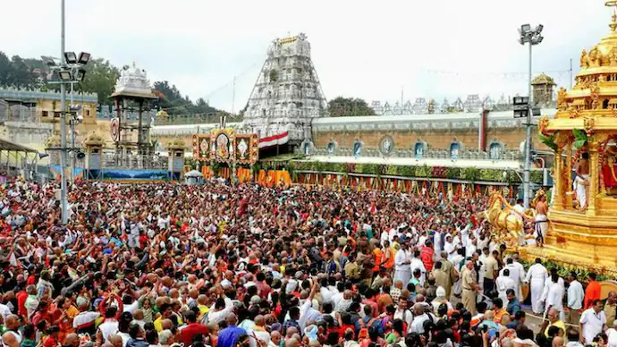

Andhra Pradesh
Tirupati: Lord of Seven Hills
Welcome to Tirumala, the sacred seven hills that are the earthly Vaikuntha, the abode of Lord Venkateswara. As one of the most revered and visited pilgrimage sites on the planet, Tirupati is a Tirtha of immense faith, where millions come to seek the blessings of the Lord, who is believed to reside here to protect and guide humanity through the difficult age of Kali Yuga.
The Puranic Origin: The Lord's Earthly Sojourn
The Puranas narrate that Lord Vishnu, in his form as Varaha, first rescued the earth and chose these hills as his abode. Later, Lord Vishnu descended to earth as Venkateswara in search of Goddess Lakshmi. He settled on the Tirumala hills, where he performed penance. To pay for his divine marriage to Padmavati, he took a great loan from Kubera, the treasurer of the gods. It is believed that devotees who make offerings at Tirupati are helping the Lord repay this cosmic debt, and in return, he blesses them with prosperity and removes their obstacles.
Key Spiritual Experiences
Venkateswara Swamy Darshan: The pinnacle of the pilgrimage is the *darśana* of the magnificent, eight-foot tall idol of Lord Venkateswara, adorned with precious jewels. The brief moment a pilgrim gets in front of the deity is considered a life-transforming experience, charged with intense spiritual energy.
Offering of Hair (Mundan): A unique and deeply symbolic ritual at Tirupati is the offering of hair by devotees. This act, known as *mundan*, represents the complete surrender of one's ego and vanity at the lotus feet of the Lord. It is a powerful act of humility and devotion.
The Tirupati Laddu Prasadam: The Tirupati Laddu is perhaps the most famous *prasadam* in the world. Made with a special recipe in the temple's massive kitchen, this sacred offering is a tangible form of the Lord's blessings, which pilgrims carry back to share with family and friends.